TIMELINE
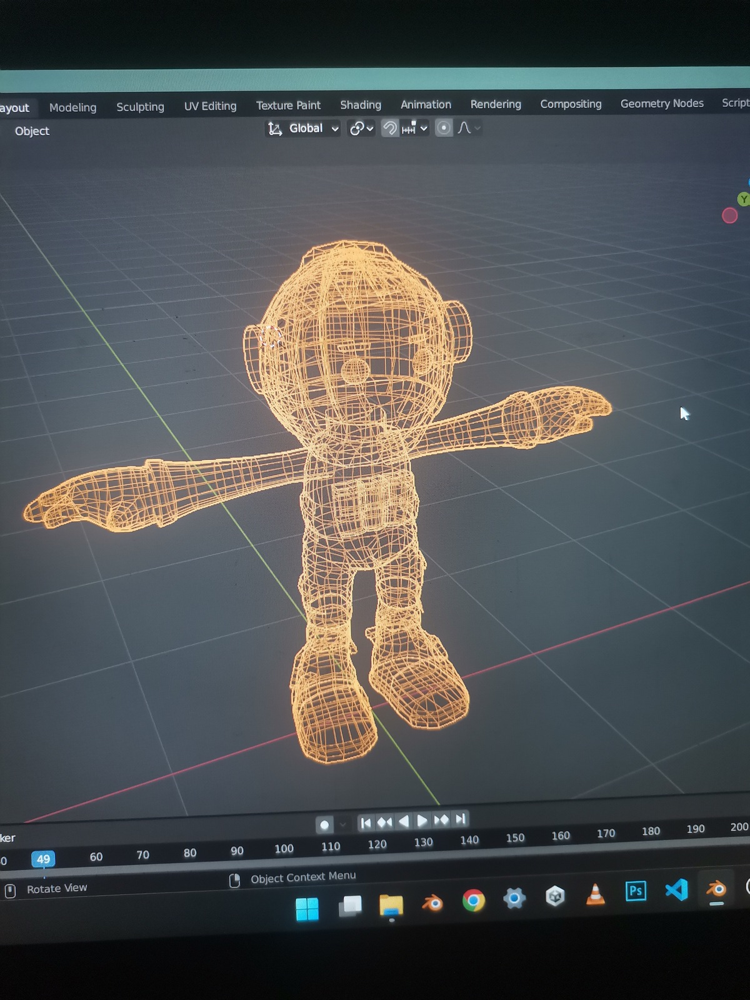
THE BEGINNING - BLENDER AND BEING AN ARTIST
MY JOURNEY INTO GAME DEVELOPMENT STARTED WITH A LOVE FOR STORYTELLING AND PLAYING GAMES. I WAS ALWAYS CREATIVE GROWING UP MAKING DRAWINGS THROUGH DIGITAL ART AND TRADITIONAL. I STARTED MY FIRST GAME USING BLENDER AT 13 YEARS OLD. I DID NOT KNOW ABOUT GAME ENGINES AND GAME MAKERS BUT I HAD HEARD OF 3D MODELLING USING BLENDER. I LATER STOPPED DUE TO THE DIFFICULTY OF USING BLENDER AS A GAME ENGINE. BUT I DID CONTINUE MAKING MODELS AND SIMPLE ANIMATIONS
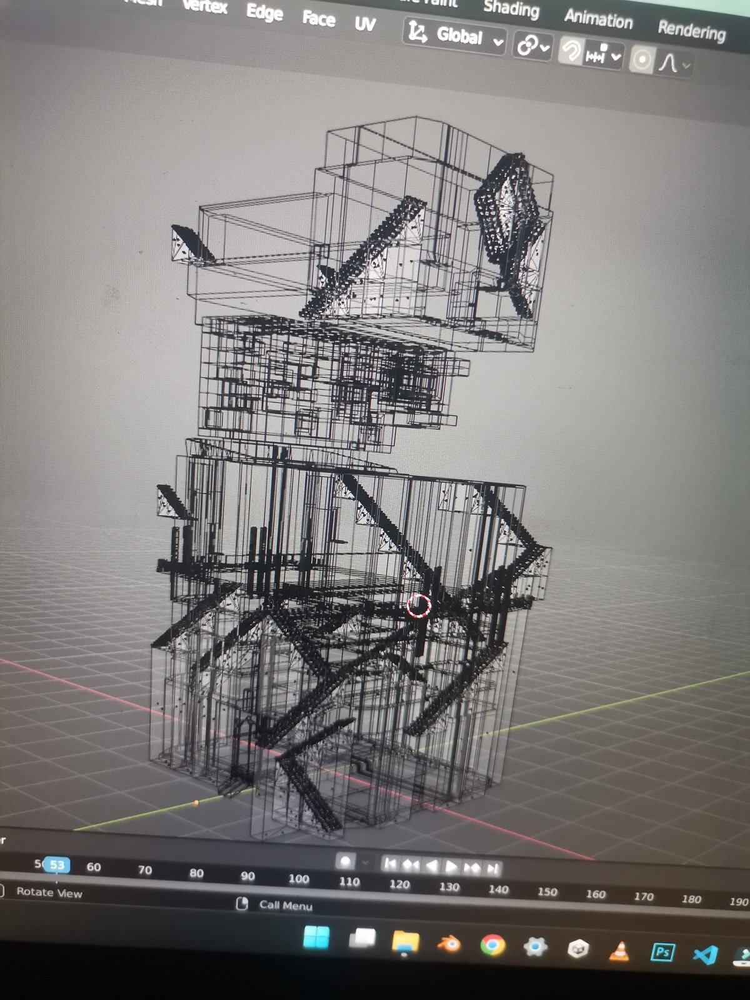
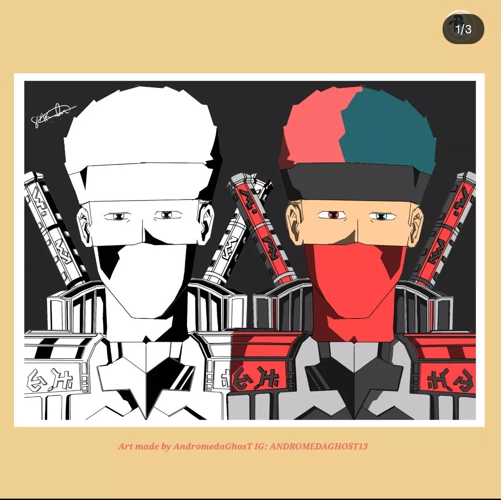
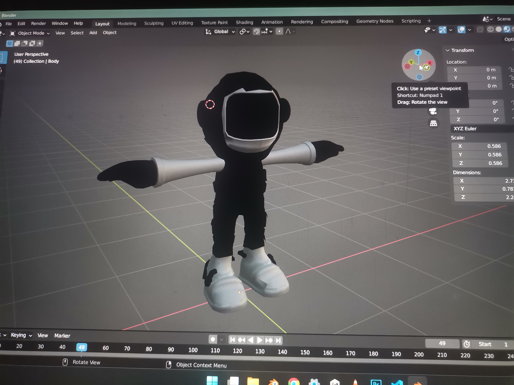
UNIVERSITY - INTRO TO COMPUTER SCEINCE
IN 2021 I STARTED MY UNIVERSITY JOURNERY AT DMI ST JOHN THE BAPTIST UNIVERSITY. I STUDIED A DEGREE IN COMPUTER SCIENCE. IT IS AT THIS POINT I FELL IN LOVE WITH WRITTING CODE AND MAKING SOFTWARES. IN LEARNING HOW TO CODE I RAN INTO STUDIES THAT MIXED MAKING GAMES AND PROGRAMMING.
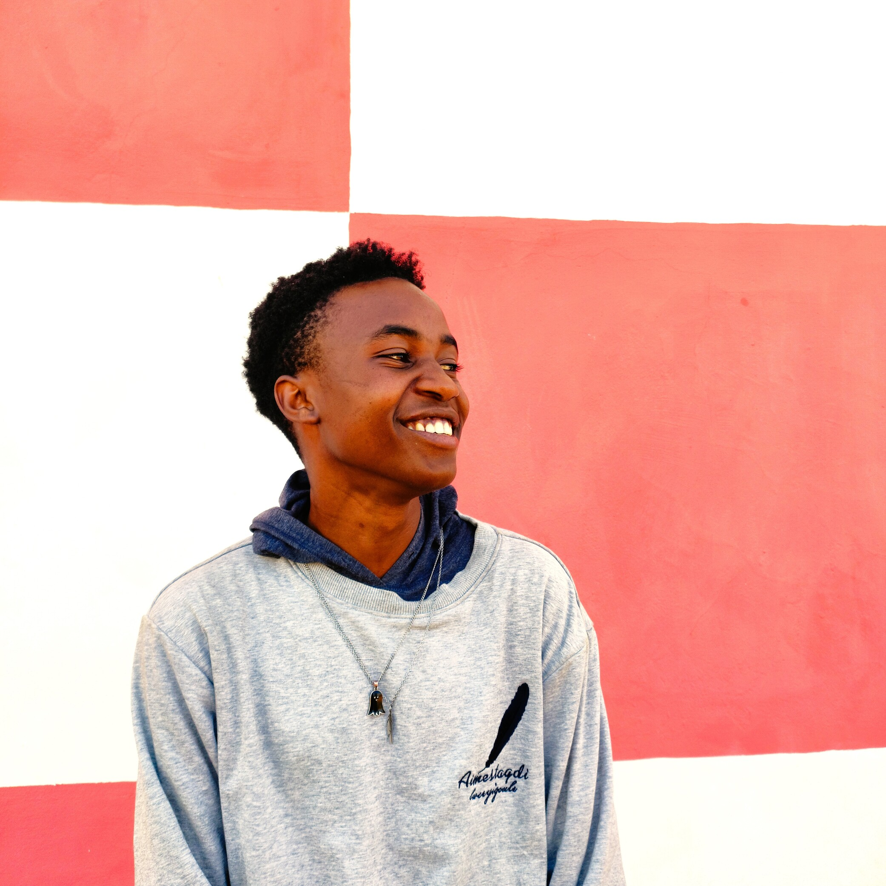
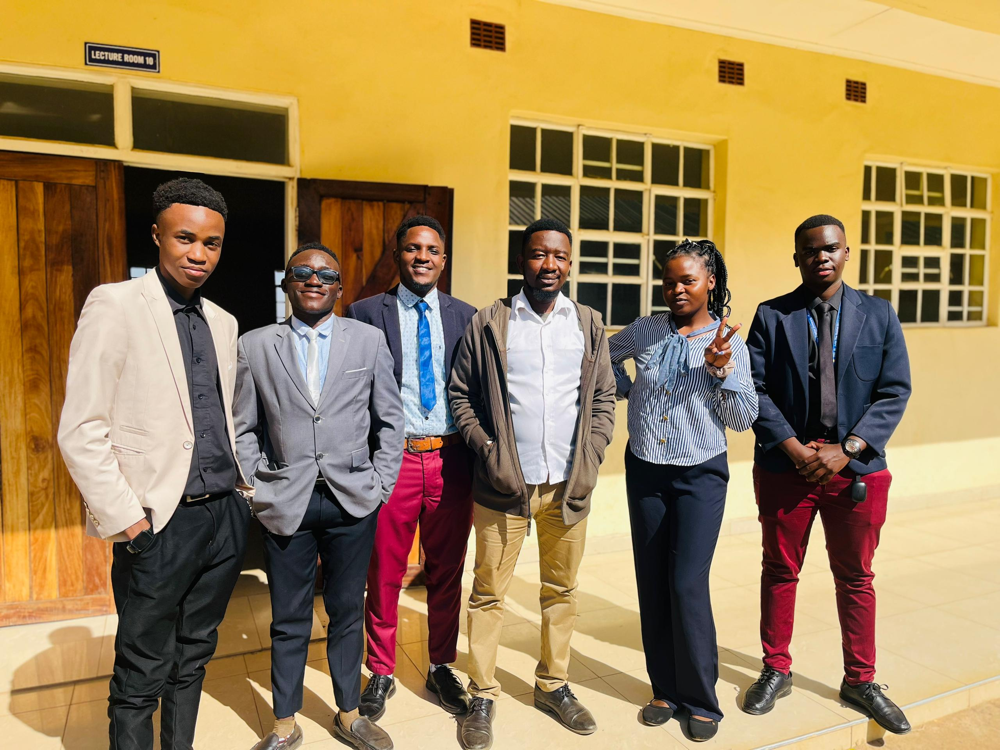
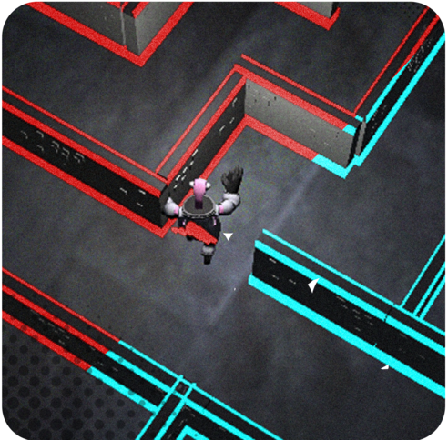
MY FIRST GAME - MAZE ADVENTURES
LEARNING COMPUTER SCEINCE REVIVED MY LOVE FOR MAKING GAMES. I PLAYED ALOT OF STORY DRIVEN GAMES (LITTLE NIGHTMARES AND JOURNEY INSPIRED ME MOST). I STARTED MAKING MY FIRST GAME BY LEARNING FROM YOUTUBE TURTOIALS BY BRACKEYS AND OTHER TALENTED YOUTUBE GAME DEVELOPERS. I DEVIDED INTO MY OWN PROJECT IN THE SAME YEAR AND THE GAME WAS CALLED MAZE ADVENTURES. IT TOOK A 6 MONTHS BECAUSE I HAD TO BALANCE SCHOOL AND THE PASSION FOR MAKING GAMES. IN MY OPINION IT IS ONE OF MY BEST PROJECT EVEN THOUGH ITS SO OLD NOW.


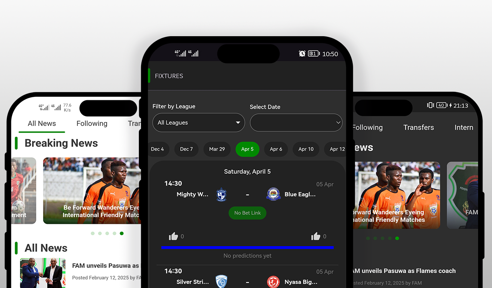
WEBSITES, SOFTWARES AND MORE GAMES
IN 2023 I FOCUSED ON IMPROVING MY PROGRAMMING SCHOOLS LEARNING NEW THING BY MAKING WEBSITES (WWW.VENDORME.TECH, WWW.KARAAMOBMC.COM, WWW.TFCBARBERSHOP.COM) AND MAKING SOFTWARES (GITHUB- SENTIMENT ANALYSER, AI MOUSE AND KEYBOARD MOVEMENT USING GESTURES AND COMPUTER VISION) AND THIS IMPROVED ON MY PROBLEM SOLVING AND PROGRAMMING SKILLS. IT MADE ME BE MORE CONFIDENT AND MORE CREATIVE IN IMPLEMENTING NEW MACHANICS IN GAME. I SARTED LERING BLENDER AGAIN WITH NOW A MORE AMTURED MIND AND LEARNED GAME LEVEL DESGIN AND HOW MAKING MODELS FOR GAMES IS DIFFERENT FROM JUST MAKING TRADITIONAL MODELS. THIS PERIOD WAS A LEARNING PERIOD AND I AQUIRED ALOT OF KNOWLEDGE BUT THERE WAS STILL MORE TO LEARN.
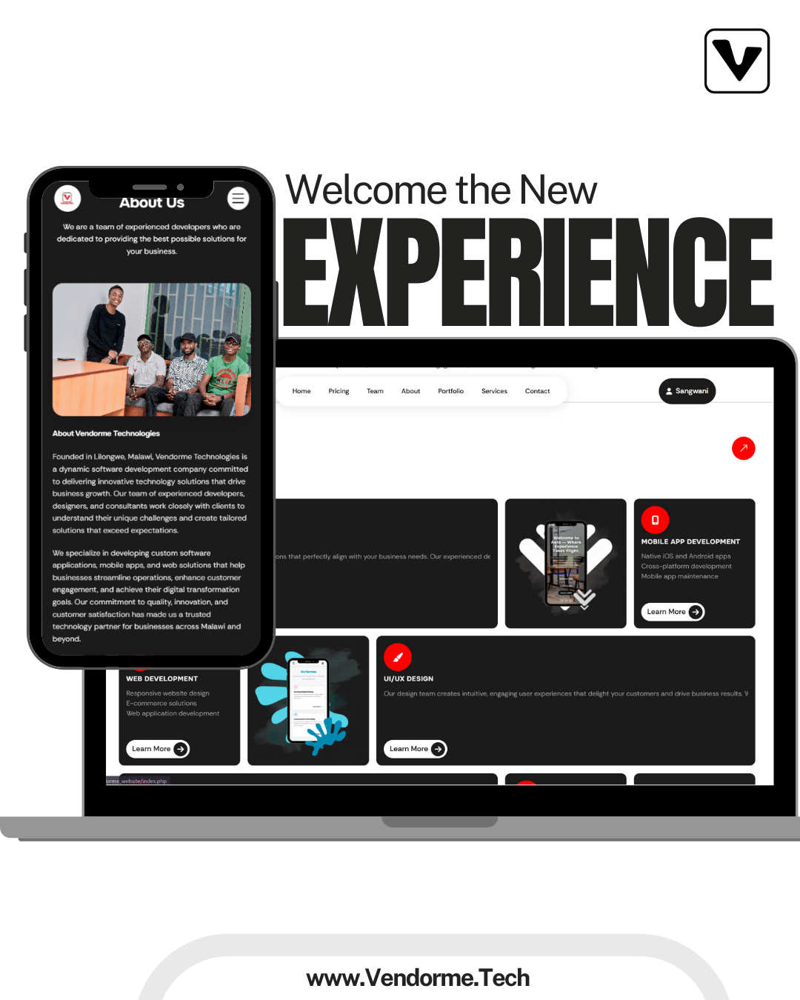
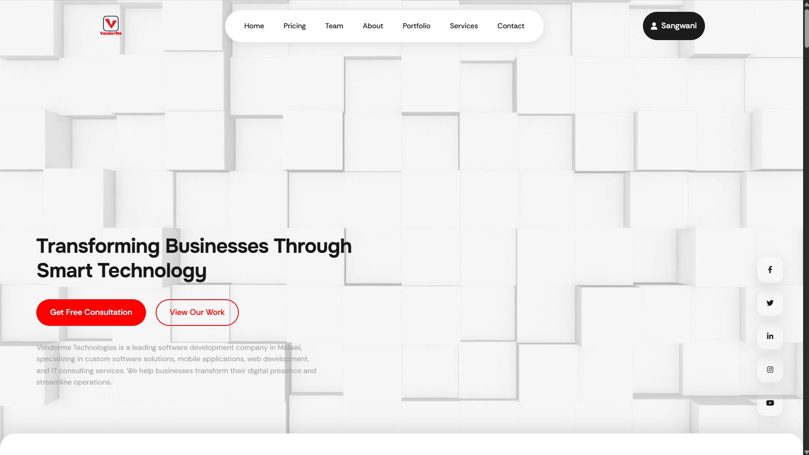

JOINING AFRICACOMICADE BOOTCAMP
IN 2024 I JOINED AFRICACOMICADE BOOTCAMP WHICH WAS INTRODUCED TO ME BY MWAYI (DREAMRAD GAMES) A FRIEND I MADE IN COLLEGE AND ALSO WITH A PASSION FOR MAKING GAMES. DURING THE BOOTCAMP I IMPROVED ON MY COLLABORATION SKILLS AND WE WERE TASKED TO MAKE GAME IN TEAMS. PARTICIPATED IN GAME JAMS WHERE I MADE THE FOLLOWING GAMES, THE FALL (7 DAY GAME JAM - 2024), SHADOWS OF SOLITUDE (CAPSTONE PROJECT - 2024) AND BRIDGED HUMANS (7 DAY GAME JAM - 2025). I GRADUATED FROM THE BOOTCAMP AND GOT MY CERTIFICATE BY THE PROPEL AT AFRICACOMICADE WHICH IS RECOGNISED BY UNITY GAME STUDIO. AND IT WAS THIS YEAR ASWELL WHERE I STARTED TO MAKE YOUTUBE VIDEOS (DEVLOGS)


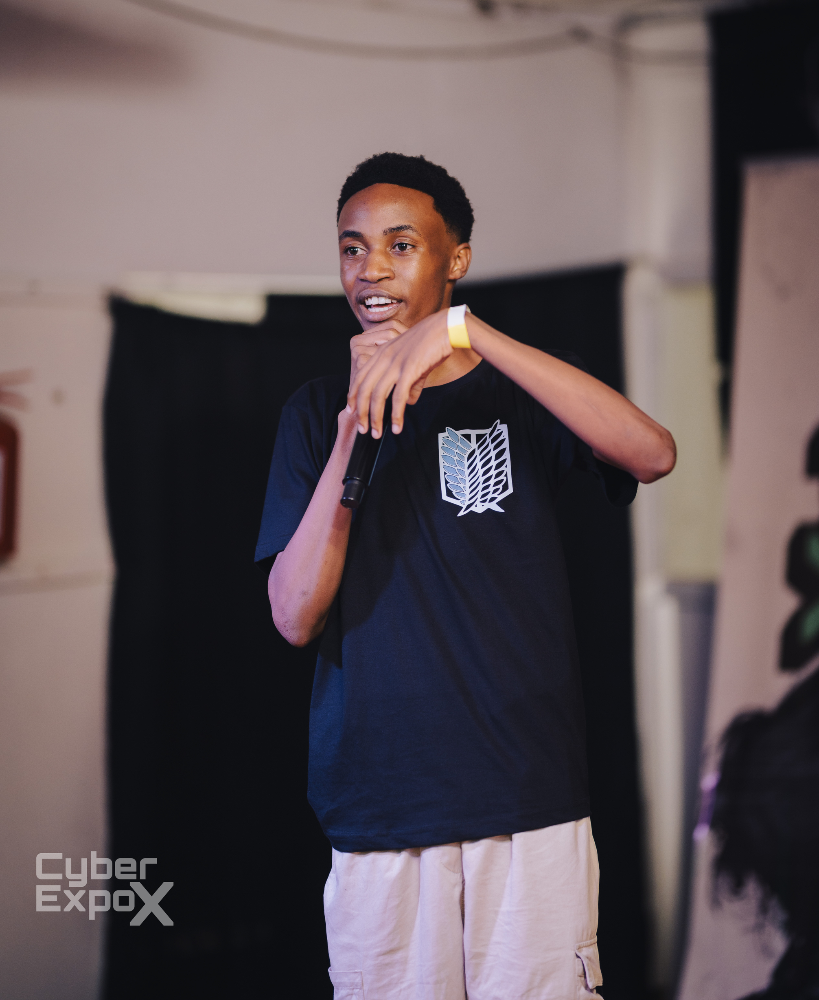
PRESENTING MY GAME AT CYBER EXPOX
I CONTINUES TO WORK ON SMALL GAMES AND STARTED WORKING ON AN AMBITIOUS PROJECT CALLED UNDERGROUND TURTLE RACING. DURING THE DEVELOPMENT PROCESS I RECIEVED AN OFFER TO BE PART OF THE FIRST MALAWIAN CYBER EVENT THAT INCLUDED GAME DEVELOPERS SHOWING THEIR GAMES. I WORKED ON MY GAME AND MADE IT TO THE EXPO WHERE I MET WONDERFUL PEOPLE AND OTHER GAME DEVELOPERS WORKING HARD TO CREATE INTERACTIVE STORIES THAT MATTER.
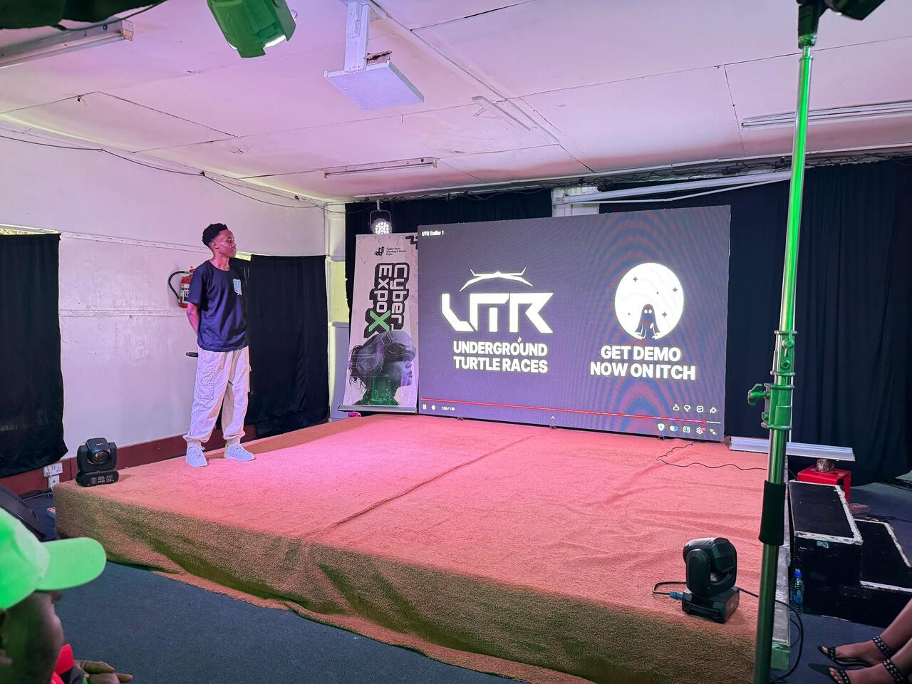
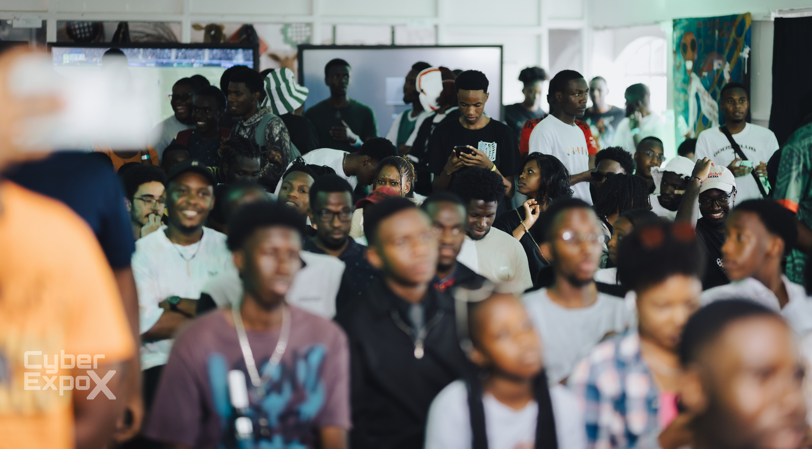
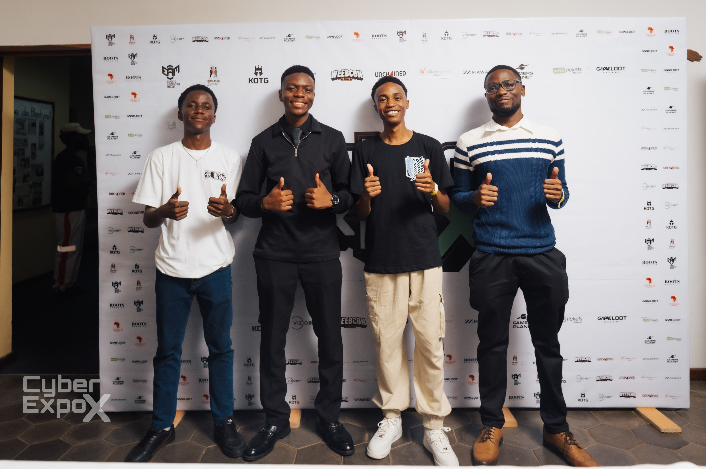

WORKING AS A GAME INSTRUCTOR AND MAKING MY FIRST TITLE
AFTER THE EVENT I FOUND AN OPPORTUNITY TO BE A REMOTE GAME INSTRUCTOR BY A NIGERIAN COMPANY (NEXTGEN ACADEMY). I CURRENTLY TEACH SMALL CHIRLDREN ABOUT GAME DEVELOPMENT IN UNITY SINCE DECEMBER 2025. I AM CURRENTLY WORKING ON MAKING UNDERGROUND TRUTLE RACES AS A FIRST ACTUAL GAME RELEASE DUE TO ALL THE POSITIVE FEEDBACK IVE RECIED ON IT. IM STILL IMPROVING ON MY PROGRAMMING AND GAME MAKING SKILLS AND APPLYING THEM PRACTICALLY. THERE IS MORE TO LEARN AND MORE STORIES TO TELL. AS GAMERS WE MUST NEVER STOP GAMING........
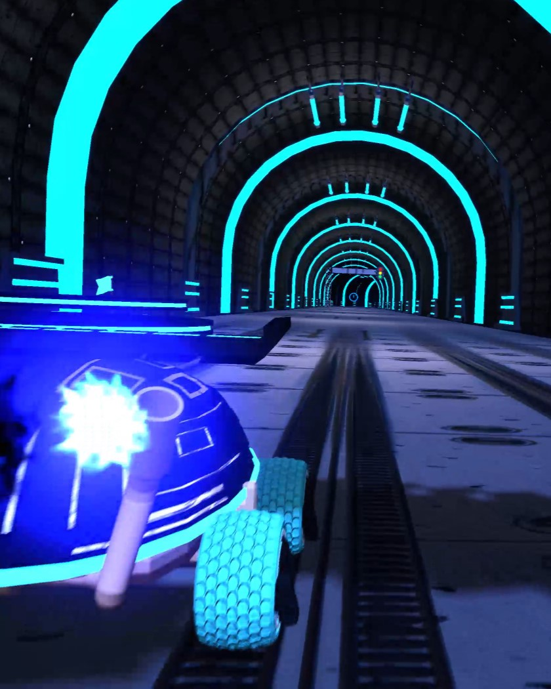
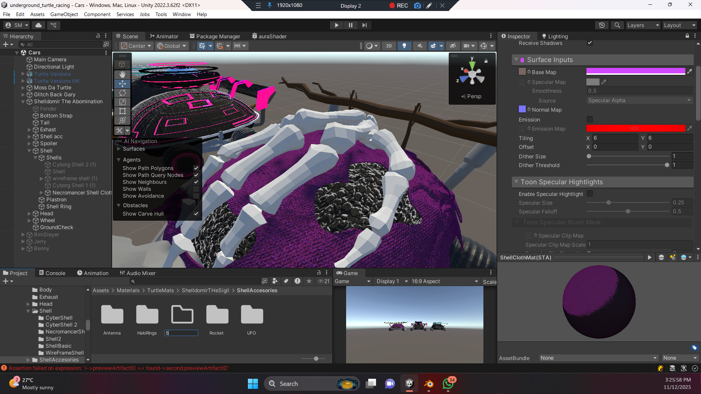
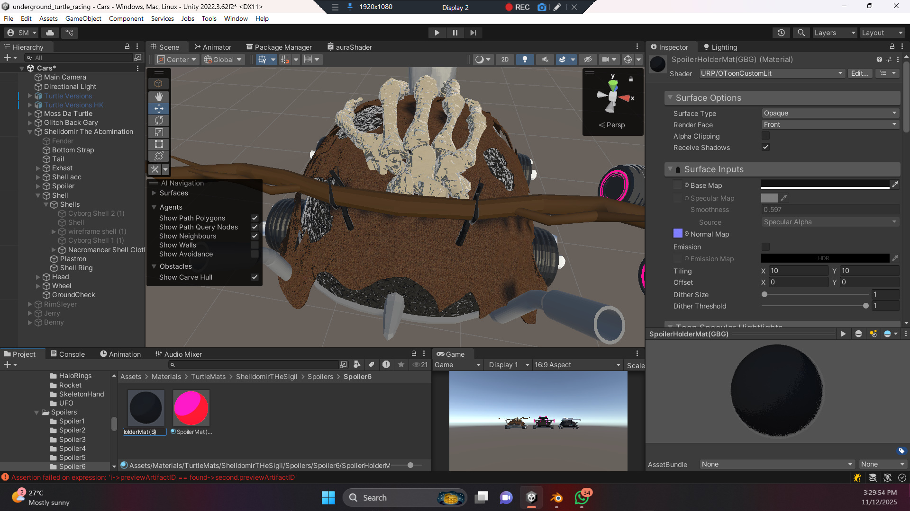
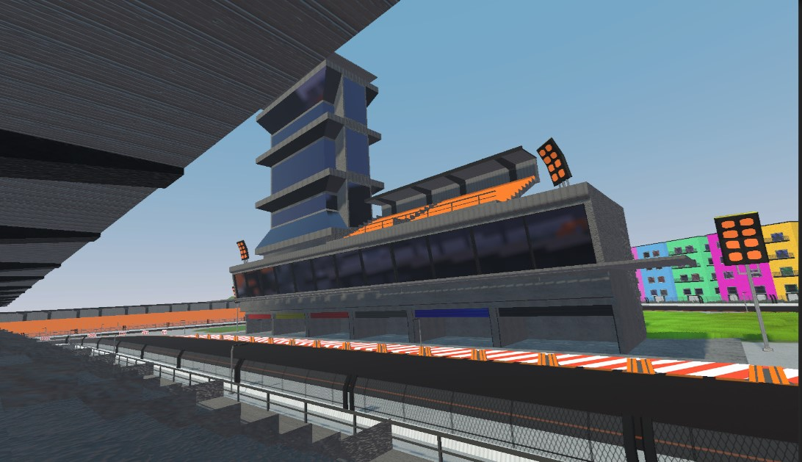